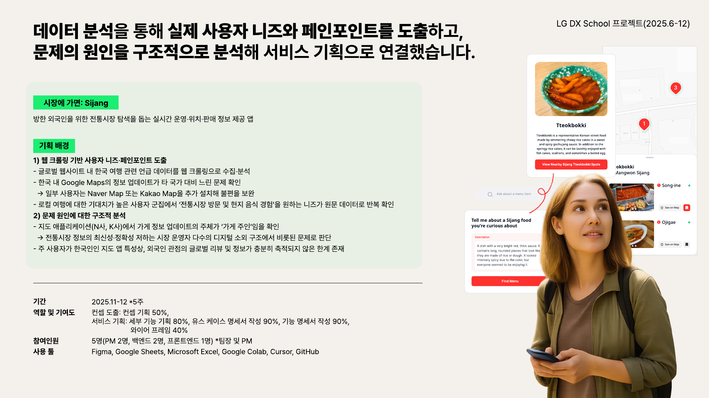
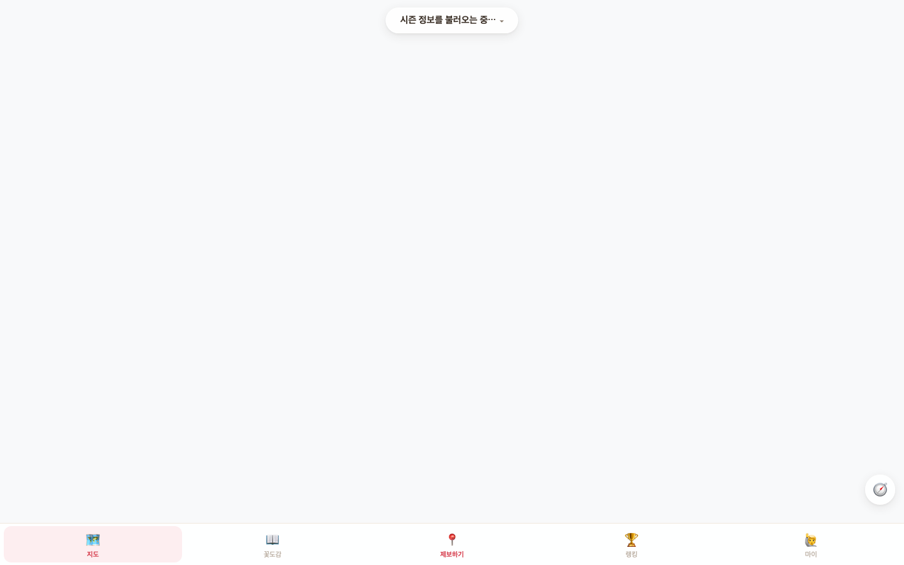

데이터에서 사업이 답해야 할 문제를 찾는
헬스케어 AI/AX 전략 지원자 이소민입니다.
리서치·데이터 분석·서비스 기획을 연결해
인사이트를 실행안으로 바꿨습니다.
20대연구소 · 6개월간 인사이트 보고서 20건
시장에 가면 · 글로벌 커뮤니티 약 14만 건 분석
유스케이스 18종 · 기능 명세 · 화면 설계
데이터 분석 · 문제 재정의 · 서비스 전략
질문 설계 · 정성 데이터 · 보고서
데이터 활용 · 사용자 보호
GPS의 한계를 기능 보완으로 덮지 않고 외국인의 탐색 행동을 다시 분석해 이미지 중심 서비스로 전환했습니다.
외국인의 전통시장 불편을 해결한다는 방향만 있었고 무엇을 먼저 풀어야 할지 근거가 없었습니다.
음식명을 모르면 이미지를 먼저 보고 판매처를 찾으며, 점포 운영자는 정보를 계속 관리하기 어렵습니다.

GPS로 음식 사진과 점포를 정확히 연결하려 했습니다.
시장 내부 위치 정확도로는 점포 매칭이 어려웠습니다.
이미지 중심 탐색과 NFC 기반 정보 등록을 설계했습니다.
유스케이스 18종과 기능 명세로 구체화했습니다.
참여자 관심사와 사내 의사결정 주제를 교차해 실무에 활용할 수 있는 질문과 보고서를 만들었습니다.
사내 위클리 미팅에서 실제 논의되는 주제를 아카이빙했습니다.
참여자 관심사와 교차해 매주 질문 6개를 구성했습니다.
응답을 목적에 맞는 카테고리로 분류했습니다.
핵심 내용을 시각화해 내부 제안서 근거로 제공했습니다.
사용자가 올린 사진과 위치 정보에는 타인의 얼굴과 정확한 촬영 위치가 남을 수 있습니다.
데이터 전략은 분석 정확도뿐 아니라 사용자의 신뢰와 공개 범위를 함께 다뤄야 합니다.

헬스케어 AI/AX 전략에서도 산업·경쟁 자료와 현장의 요구를 함께 분석하고, AI가 실제로 해결해야 할 문제와 실행 순서를 명확히 정하겠습니다.
이소민 · NAVER Cloud 헬스케어 AI/AX 전략 지원